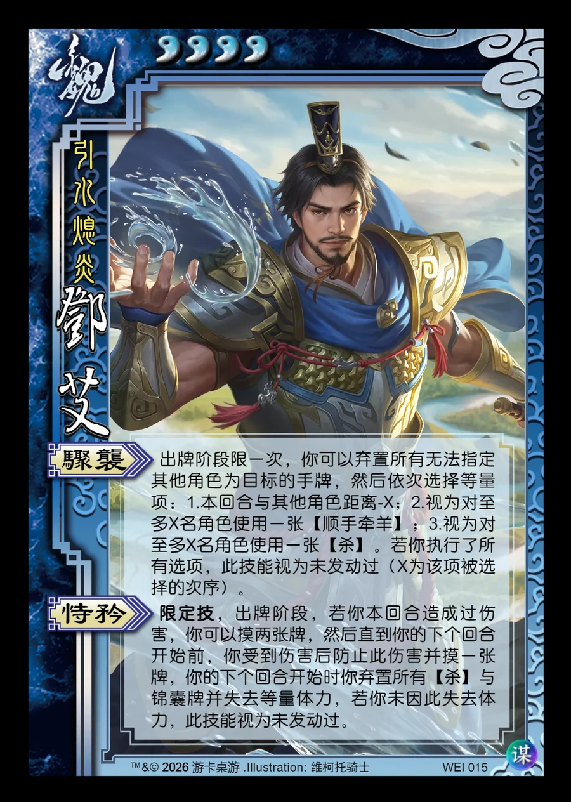

点击卡面查看大图
魏
谋邓艾
♥4引水熄炎
骤袭
出牌阶段限一次，你可以弃置所有无法指定其他角色为目标的手牌，然后依次选择等量项：1.本回合与其他角色距离-X；2.视为对至多X名角色使用一张【顺手牵羊】；3.视为对至多X名角色使用一张【杀】。若你执行了所有选项，此技能视为未发动过（X为该项被选择的次序）。
恃矜限定技
限定技，出牌阶段，若你本回合造成过伤害，你可以摸两张牌，然后直到你的下个回合开始前，你受到伤害后防止此伤害并摸一张牌，你的下个回合开始时你弃置所有【杀】与锦囊牌并失去等量体力，若你未因此失去体力，此技能视为未发动过。